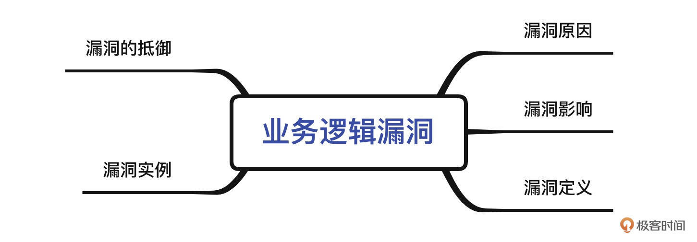
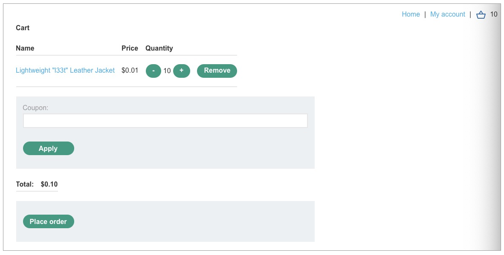

- 00 导读 解读OWASP Top10 2021.md.html
- 00 开篇词 从黑客的视角找漏洞，从安全的角度优雅coding.md.html
- 01 失效的访问控制：攻击者如何获取其他用户信息？.md.html
- 02 路径穿越：你的Web应用系统成了攻击者的资源管理器？.md.html
- 03 敏感数据泄露：攻击者如何获取用户账户？.md.html
- 04 权限不合理：攻击者进来就是root权限？.md.html
- 05 CSRF：为什么用户的操作他自己不承认？.md.html
- 06 加密失败：使用了加密算法也会被破解吗？.md.html
- 07 弱编码：程序之间的沟通语言安全吗？.md.html
- 08 数字证书：攻击者可以伪造证书吗？.md.html
- 09 密码算法问题：数学知识如何提高代码可靠性？.md.html
- 10 弱随机数生成器：攻击者如何预测随机数？.md.html
- 11 忘记加“盐”：加密结果强度不够吗？.md.html
- 12 注入（上）：SQL注入起手式.md.html
- 13 注入（下）：SQL注入技战法及相关安全实践.md.html
- 14 自动化注入神器（一）：sqlmap的设计思路解析.md.html
- 15 自动化注入神器（二）：sqlmap的设计架构解析.md.html
- 16 自动化注入神器（三）：sqlmap的核心实现拆解.md.html
- 17 自动化注入神器（四）：sqlmap的核心功能解析.md.html
- 19 失效的输入检测（上）：攻击者有哪些绕过方案？.md.html
- 20 失效的输入检测（下）：攻击者有哪些绕过方案？.md.html
- 21 XSS（上）：前端攻防的主战场.md.html
- 22 XSS（中）：跨站脚本攻击的危害性.md.html
- 23 XSS（下）：检测与防御方案解析.md.html
- 24 资源注入：攻击方式为什么会升级？.md.html
- 25 业务逻辑漏洞：好的开始是成功的一半.md.html
- 26 包含敏感信息的报错：将安全开发标准应用到项目中.md.html
- 27 用户账户安全：账户安全体系设计方案与实践.md.html
- 28 安全配置错误：安全问题不只是代码安全.md.html
- 29 Session与Cookie：账户体系的安全设计原理.md.html
- 30 HTTP Header安全标志：协议级别的安全支持.md.html
- 31 易受攻击和过时的组件：DevSecOps与依赖项安全检查.md.html
- 32 软件和数据完整性故障：SolarWinds事件的幕后⿊⼿.md.html
- 33 SSRF：穿越边界防护的利刃.md.html
- 34 Crawler VS Fuzzing：DAST与机器学习.md.html
- 35 自动化攻防：低代码驱动的渗透工具积累.md.html
- 36 智能攻防：构建个性化攻防平台.md.html
- 大咖助场 数字证书，困境与未来.md.html
- 春节策划（一） 视频课内容精选：Web渗透测试工具教学.md.html
- 春节策划（三） 一套测试题，看看对课程内容的掌握情况.md.html
- 春节策划（二） 给你推荐4本Web安全图书.md.html
- 结束语 无畏前行.md.html
- 捐赠
25 业务逻辑漏洞：好的开始是成功的一半
你好，我是王昊天。
在前几年，杭州发生了一件让人脑洞大开的违法犯罪行为，竟然有一名男子在超市购物时，将昂贵商品的标签替换为便宜商品的标签，从而实现了将6000余元的商品仅仅花了48元就买回了家。
这名男子得手的原因就是超市的业务逻辑存在漏洞，允许男子修改商品上的标签，给超市造成了很大的损失。事实上，在Web应用中也是有逻辑漏洞存在的，这些漏洞也会给Web应用带来巨大的损失。
所以今天，我会给你讲解Web应用中的业务逻辑漏洞。首先我们会介绍什么是业务逻辑漏洞，让你先对这一漏洞有一定的理解。然后我们会学习业务逻辑漏洞存在的原因，进而分析出业务逻辑漏洞可能会导致的后果及影响。最后，我们会一起了解现实中发生的业务逻辑漏洞事例，加深你对业务逻辑漏洞的理解。

下面，让我们先从最基础的定义开始吧。
业务逻辑漏洞的定义
当开发者在设计一个Web应用时，没有进行充分的考虑，导致Web应用的逻辑设计不够充分，就容易导致业务逻辑漏洞的产生。这么说有点抽象，我们一起来看一个示例帮助你理解它。
这是一个购物网站，我们打开了一个其中的衣服，它的价格十分昂贵，需要1337美元。我们可以输入想要购买的数量，然后点击Add to cart按钮，将它添加到购物车。为了尝试攻击这个应用，我们在点击添加购物车时，用BurpSuite拦截到报文如下：
POST /cart HTTP/1.1
Host: acf51f0c1eaff6e6c0f28fae00f80084.web-security-academy.net
Cookie: session=R4pFnL8mM0tsrGHnit3y3ZdPgYQd9n1B
Content-Length: 50
Cache-Control: max-age=0
Sec-Ch-Ua: "Chromium";v="95", ";Not A Brand";v="99"
Sec-Ch-Ua-Mobile: ?0
Sec-Ch-Ua-Platform: "macOS"
Upgrade-Insecure-Requests: 1
Origin: https://acf51f0c1eaff6e6c0f28fae00f80084.web-security-academy.net
Content-Type: application/x-www-form-urlencoded
User-Agent: Mozilla/5.0 (Windows NT 10.0; Win64; x64) AppleWebKit/537.36 (KHTML, like Gecko) Chrome/95.0.4638.54 Safari/537.36
Accept: text/html,application/xhtml+xml,application/xml;q=0.9,image/avif,image/webp,image/apng,*/*;q=0.8,application/signed-exchange;v=b3;q=0.9
Sec-Fetch-Site: same-origin
Sec-Fetch-Mode: navigate
Sec-Fetch-User: ?1
Sec-Fetch-Dest: document
Referer: https://acf51f0c1eaff6e6c0f28fae00f80084.web-security-academy.net/product?productId=1
Accept-Encoding: gzip, deflate
Accept-Language: zh-CN,zh;q=0.9
Connection: close
productId=1&redir=PRODUCT&quantity=10&price=133700
看到这个报文，我眼前一亮，可以发现我们不仅仅可以输入数量，甚至还可以输入产品的价格。那我们就自然的会去尝试对它进行修改，这里我们将它改为1，由于价格的单位是按分计算的，所以从购物车中我们看到，产品的价格变为了1美分。

这样，我们就可以花费很便宜的价格，去购买很昂贵的商品了。这就是一个业务逻辑漏洞，它的根本原因在于允许用户修改单价。虽然Web应用的前端页面没有修改单价的选项，但是攻击者可以通过一些软件例如BurpSuite去修改单价，进而导致漏洞的发生。
这就是应用开发者考虑不够充分导致的问题，他们可能认为只要前端页面无法修改单价就行，但是攻击者会有别的方式去修改。究其业务逻辑漏洞的根本原因，就是开发者会对用户的行为做一些合法的预期设想，然后根据这个预期来进行安全设计和响应，一旦攻击者进行一些开发者意想不到的操作，就很容易导致一些问题的发生。
总体来说，业务逻辑漏洞是非常多样化的，它与本身应用的功能和类型相关，因此想要鉴别它是非常困难的，因为这需要一定的业务知识。所以我们很难用漏洞探测工具去对业务逻辑漏洞进行检测，这也导致了业务逻辑漏洞成为一些漏洞测试员的主要工作内容。
在了解完业务逻辑漏洞的原因后，下面让我们深入研究一下这个漏洞是如何引起的。
业务逻辑漏洞的原因
业务逻辑漏洞发生的原因就是Web应用的设计者和开发者对用户的行为做出了错误的假设。这个假设使得Web应用对于用户的输入验证不够充分。
比如，应用开发者认为用户只会通过访问浏览器进行数据的上传，那么很可能就会把输入验证放到前端去处理。但是攻击者可以通过拦截代理软件例如BurpSuite，很容易就能绕过Web应用对于输入的检测，从而给Web应用带来威胁。
对于用户输入验证的不充分，最终导致攻击者可以对应用做出一些预期之外的操作。由于应用开发者没有想到这种情况，所以应用无法安全地处理这些操作，这就导致了漏洞的发生。因此，在业务逻辑复杂的Web应用中，很容易会出现业务逻辑漏洞。
到这里，你已经明白了业务逻辑漏洞是什么，以及它是如何产生的，我们已经有了足够的基础知识储备，这样我们可以更好地学习业务逻辑漏洞的影响了。
业务逻辑漏洞的影响
由于不同Web应用具有不同的业务逻辑，所以业务逻辑漏洞的影响范围很广很杂。但是很多的逻辑漏洞攻击，都可能会对整个Web应用造成很严重的后果。
从根本上来讲，业务逻辑漏洞产生的影响与它的功能有关。
比如登录授权机制上的逻辑漏洞就会对应用产生数据泄漏的影响，攻击者可以利用它进行权限提升或者绕过登录验证，从而获得一些敏感数据。
而经济交易中的逻辑漏洞，则可能会允许攻击者窃取资金或进行欺诈行为，导致很多的经济损失。
我们需要知道，有的业务逻辑漏洞可能无法让攻击者直接受益，但是会对应用的业务造成一些负面影响，例如影响正常用户的使用。
了解完业务逻辑漏洞的影响后，我们来看两个现实中的业务逻辑漏洞案例。
业务逻辑漏洞实例
这两个案例都很典型，希望你以后遇到类似的应用时，可以联想到它可能存在业务逻辑漏洞。
首先，我们回顾下之前学习的那个购物网站，我们利用BurpSuite修改了产品的价格，导致可以用1美分购买原本价格昂贵的大衣。这是网购中典型的业务逻辑漏洞，它仅仅在客户端做了些输入限制，我们很容易就可以绕过它。这个逻辑漏洞是由于对客户端验证的过度信任造成的。
应用如果没有做好对异常输入的处理，也会造成逻辑漏洞。下面，让我们再看一个简单的示例。
$transferAmount = $_POST['amount'];
$currentBalance = $user->getBalance();
if ($transferAmount <= $currentBalance) {
// Complete the transfer
} else {
// Block the transfer: insufficient funds
}
这是一个银行转账应用，用户可以通过POST方式上传转账的金额。我们不难看出它判断了转账金额是否超出余额，如果余额支持转账，那么就进行交易操作，否则拒绝交易。这是一个正确的逻辑，但是如果攻击者将amount设置为负值，那么攻击者就会收到它的绝对值的金额。这就是一个业务逻辑漏洞，它产生的原因就是应用没有对异常输入做正确处理。
看完这些可怕的逻辑漏洞实例，我们不难知道，做好业务逻辑漏洞的抵御措施是非常重要的。所以我们也不妨学习下如何抵御业务逻辑漏洞吧！
业务逻辑漏洞的抵御
简单来说，抵御业务逻辑漏洞有两个关键。第一点，确保应用的开发者和测试者理解应用的功能。第二点，避免开发者对用户的行为以及应用其他部分的行为做出错误的预期。
展开来说，我们需要明确自己对应用输入作出的预期假设，并执行必要的逻辑验证去判断输入是否符合预期，在将所有的输入经过验证之后才予以使用。
同时，确保所有的开发者和测试者完全理解，开发时做出的假设输入以及应用在不同的情形下进行的响应，这可以帮助应用开发团队尽早发现逻辑漏洞。
当我们发现一个逻辑漏洞时，我们可以分析Web应用中存在的逻辑缺陷，帮助我们发现应用其他的弱点，然后将发现的弱点统统解决掉，这可以让我们的业务逻辑更加安全。
总结
在今天的学习中，我们完整地学习了业务逻辑漏洞。
首先，我们学习了什么是业务逻辑漏洞，在学习过程中，我们看了一个卖衣服的示例，了解到业务逻辑漏洞就是，应用的开发者在设计一个Web应用时，没有进行充分的考虑，导致Web应用的逻辑设计不够充分，从而引起的安全问题。
然后，我们进一步分析了业务逻辑漏洞的产生原因，它主要是由于应用的设计者对于用户的行为作出了错误的预期，并且对用户的输入限制做得不到位，使得应用在处理预期之外的输入时，做出错误的处理，这就导致了业务逻辑漏洞。
接下来，我们分析了业务逻辑漏洞的影响，了解到由于业务逻辑的不同，业务逻辑漏洞造成的影响也不同，这与它的功能相关，例如授权机制的逻辑漏洞会造成数据泄漏的影响。
最后，我们了解了现实中的业务逻辑漏洞示例，分析它们的引起方式有过度信任客户端验证以及错误处理非预期输入。它们造成的后果都是非常严重的，所以我们还学习了抵御这一漏洞的方法，知道了防范业务逻辑漏洞需要做到两个关键，即确保应用的开发者和测试者理解应用的功能，并且避免开发者对用户的行为以及应用其他部分的行为做出错误的预想。
思考题
你能想出一个其他的业务逻辑漏洞示例吗？
欢迎在评论区留下你的思考。如果觉得今天的内容对你有所帮助的话，也欢迎你把课程分享给其他同事或朋友，我们共同学习进步！
© 2019 - 2023 Liangliang Lee. Powered by gin and hexo-theme-book.